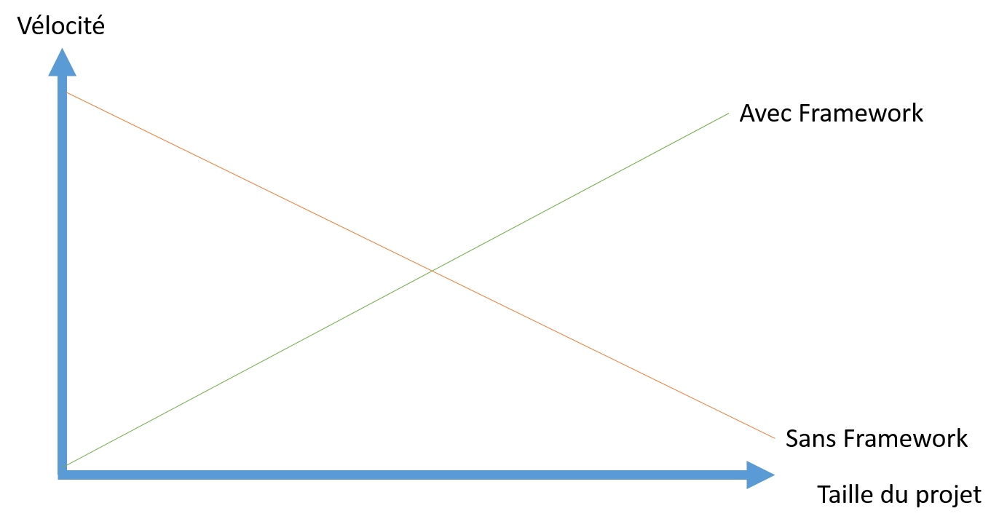
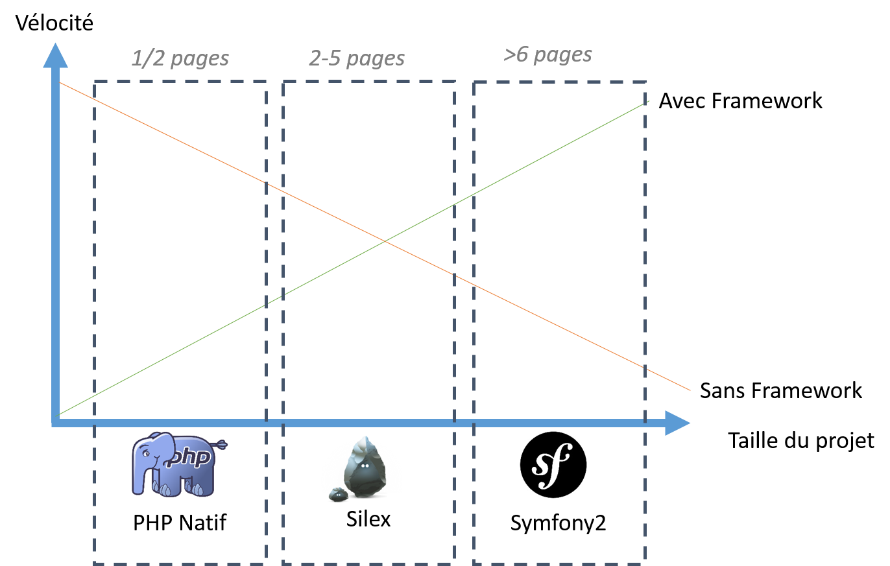
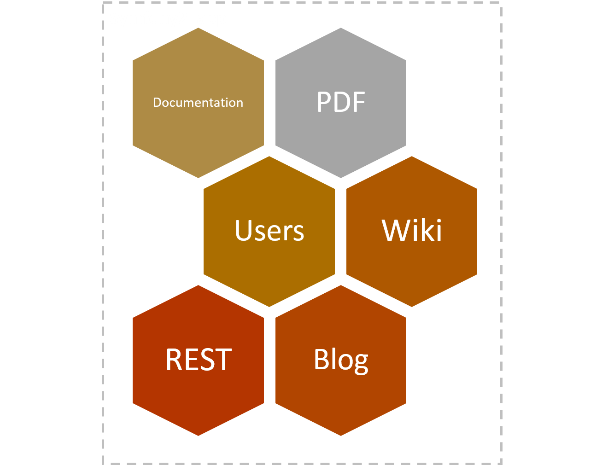
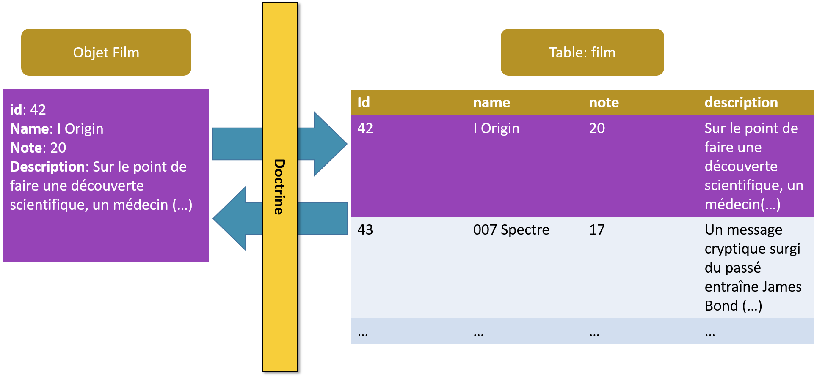

Projets utilisants Symfony: Drupal, Laravel, eZ Publish, Magento, BlaBlaCar, Yahoo!, Dailymotion...

<ul>
<?php
if (count($users) > 0) {
foreach ($users as $aUser) {
echo "<li>".$aUser->name." vit à ".$aUser->city."</li>";
}
} else {
echo "<li>Pas d'utilisateurs</li>";
}
?>
</ul>
{% for aUser in users %}
- {{ aUser.name }} vit à {{ aUser.city }}
{% else %}
- Pas d'utilisateurs
{% endfor %}

Et aussi sur : stackoverflow.com